REAL Training, REAL Metrics, NO Fallbacks!
Generated: 2025-10-09 02:00:28
| GNN Model | Downstream Accuracy | Downstream Precision | Downstream Recall | Downstream F1 | Training RMSE |
|---|---|---|---|---|---|
| GAT | 0.500 | 0.250 | 0.500 | 0.333 | 0.0396 |
| GraphSAGE | 0.750 | 0.500 | 1.000 | 0.667 | 0.0164 |
| GCN | 0.500 | 0.250 | 0.500 | 0.333 | 0.0331 |
| Transformer | 0.750 | 0.500 | 1.000 | 0.667 | 0.0126 |
| GNN Model | Detection Accuracy | Detection Precision | Detection Recall | Detection F1 |
|---|---|---|---|---|
| GAT | 0.143 | 0.167 | 0.500 | 0.250 |
| GraphSAGE | 0.143 | 0.167 | 0.500 | 0.250 |
| GCN | 0.286 | 0.286 | 1.000 | 0.444 |
| Transformer | 0.286 | 0.286 | 1.000 | 0.444 |
| GNN Model | Network Efficiency | Protection Rate | Avg Trust (Honest) | Avg Trust (Malicious) | Tasks Processed |
|---|---|---|---|---|---|
| GAT | 0.539 | 0.989 | 0.649 | 0.657 | 9000 |
| GraphSAGE | 0.536 | 0.986 | 0.648 | 0.671 | 9000 |
| GCN | 0.535 | 0.984 | 0.645 | 0.669 | 9000 |
| Transformer | 0.536 | 0.988 | 0.647 | 0.666 | 9000 |
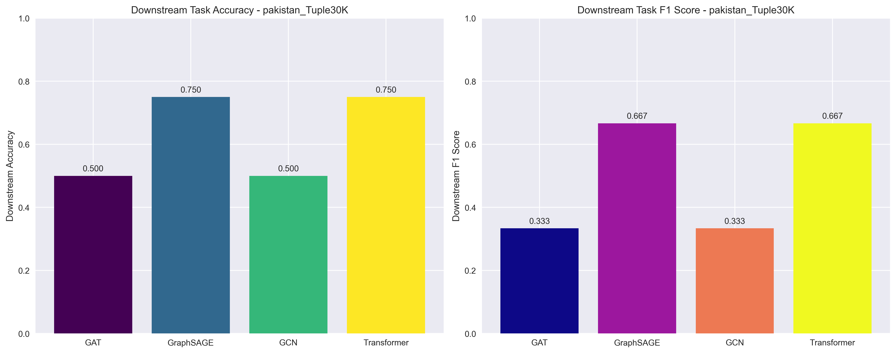
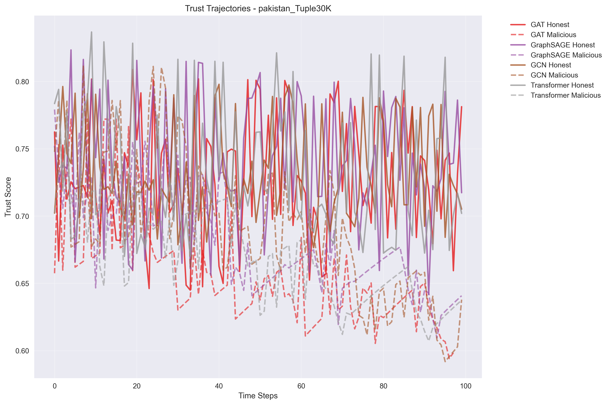
| GNN Model | Downstream Accuracy | Downstream Precision | Downstream Recall | Downstream F1 | Training RMSE |
|---|---|---|---|---|---|
| GAT | 0.364 | 0.167 | 0.333 | 0.222 | 0.0446 |
| GraphSAGE | 0.545 | 0.333 | 0.667 | 0.444 | 0.0274 |
| GCN | 0.545 | 0.333 | 0.667 | 0.444 | 0.0376 |
| Transformer | 0.727 | 0.500 | 1.000 | 0.667 | 0.0131 |
| GNN Model | Detection Accuracy | Detection Precision | Detection Recall | Detection F1 |
|---|---|---|---|---|
| GAT | 0.000 | 0.000 | 0.000 | 0.000 |
| GraphSAGE | 0.100 | 0.125 | 0.333 | 0.182 |
| GCN | 0.100 | 0.125 | 0.333 | 0.182 |
| Transformer | 0.100 | 0.125 | 0.333 | 0.182 |
| GNN Model | Network Efficiency | Protection Rate | Avg Trust (Honest) | Avg Trust (Malicious) | Tasks Processed |
|---|---|---|---|---|---|
| GAT | 0.540 | 0.986 | 0.653 | 0.694 | 15000 |
| GraphSAGE | 0.546 | 0.988 | 0.652 | 0.670 | 15000 |
| GCN | 0.542 | 0.987 | 0.650 | 0.679 | 15000 |
| Transformer | 0.541 | 0.988 | 0.652 | 0.685 | 15000 |
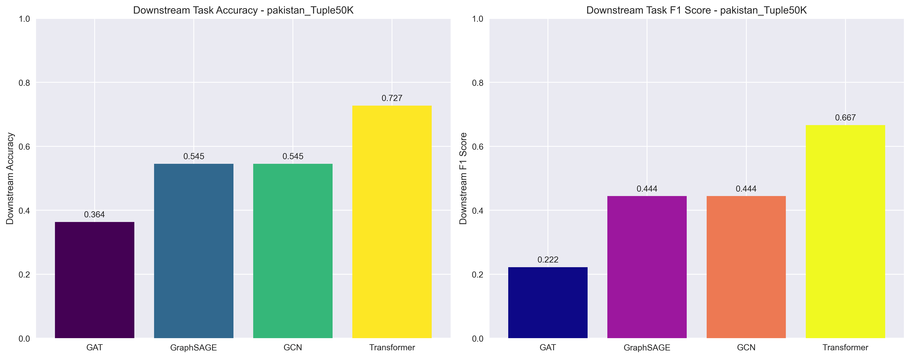
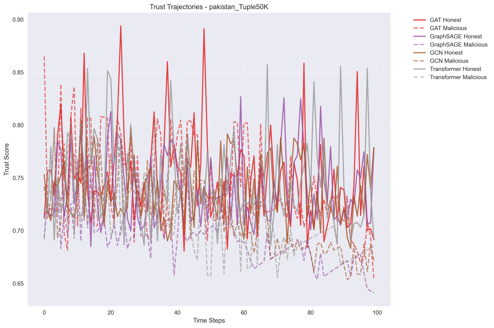
| GNN Model | Downstream Accuracy | Downstream Precision | Downstream Recall | Downstream F1 | Training RMSE |
|---|---|---|---|---|---|
| GAT | 0.467 | 0.250 | 0.500 | 0.333 | 0.0361 |
| GraphSAGE | 0.733 | 0.500 | 1.000 | 0.667 | 0.0096 |
| GCN | 0.467 | 0.250 | 0.500 | 0.333 | 0.0283 |
| Transformer | 0.733 | 0.500 | 1.000 | 0.667 | 0.0204 |
| GNN Model | Detection Accuracy | Detection Precision | Detection Recall | Detection F1 |
|---|---|---|---|---|
| GAT | 0.143 | 0.167 | 0.500 | 0.250 |
| GraphSAGE | 0.000 | 0.000 | 0.000 | 0.000 |
| GCN | 0.143 | 0.167 | 0.500 | 0.250 |
| Transformer | 0.071 | 0.091 | 0.250 | 0.133 |
| GNN Model | Network Efficiency | Protection Rate | Avg Trust (Honest) | Avg Trust (Malicious) | Tasks Processed |
|---|---|---|---|---|---|
| GAT | 0.539 | 0.990 | 0.646 | 0.686 | 30000 |
| GraphSAGE | 0.538 | 0.990 | 0.647 | 0.690 | 30000 |
| GCN | 0.537 | 0.990 | 0.645 | 0.679 | 30000 |
| Transformer | 0.539 | 0.990 | 0.648 | 0.681 | 30000 |
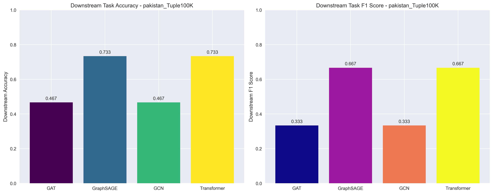
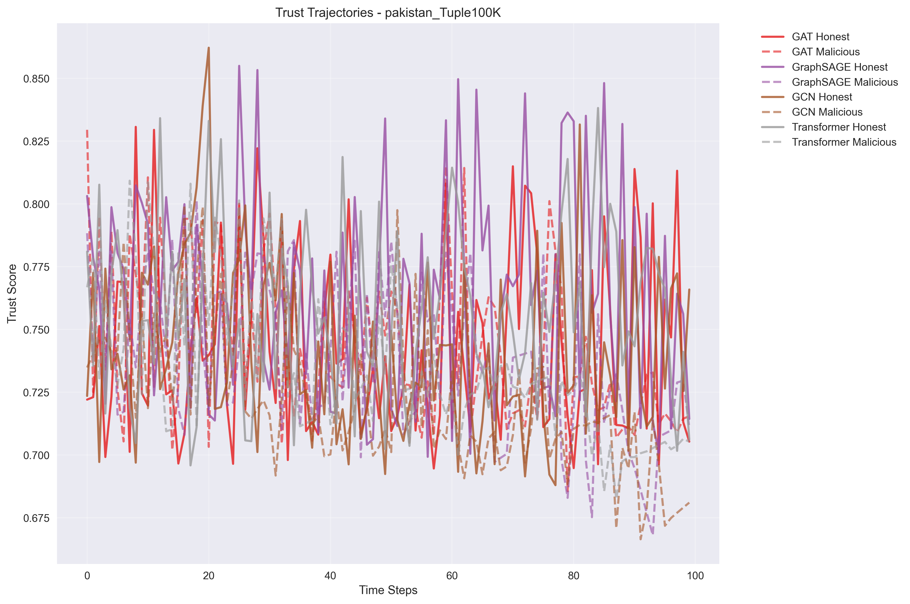
| GNN Model | Downstream Accuracy | Downstream Precision | Downstream Recall | Downstream F1 | Training RMSE |
|---|---|---|---|---|---|
| GAT | 0.440 | 0.231 | 0.429 | 0.300 | 0.0287 |
| GraphSAGE | 0.760 | 0.538 | 1.000 | 0.700 | 0.0107 |
| GCN | 0.760 | 0.538 | 1.000 | 0.700 | 0.0307 |
| Transformer | 0.760 | 0.538 | 1.000 | 0.700 | 0.0163 |
| GNN Model | Detection Accuracy | Detection Precision | Detection Recall | Detection F1 |
|---|---|---|---|---|
| GAT | 0.920 | 1.000 | 0.714 | 0.833 |
| GraphSAGE | 0.840 | 1.000 | 0.429 | 0.600 |
| GCN | 0.880 | 1.000 | 0.571 | 0.727 |
| Transformer | 0.880 | 1.000 | 0.571 | 0.727 |
| GNN Model | Network Efficiency | Protection Rate | Avg Trust (Honest) | Avg Trust (Malicious) | Tasks Processed |
|---|---|---|---|---|---|
| GAT | 0.771 | 0.886 | 0.480 | 0.480 | 800 |
| GraphSAGE | 0.771 | 0.864 | 0.487 | 0.492 | 800 |
| GCN | 0.776 | 0.892 | 0.495 | 0.485 | 800 |
| Transformer | 0.752 | 0.841 | 0.478 | 0.474 | 800 |
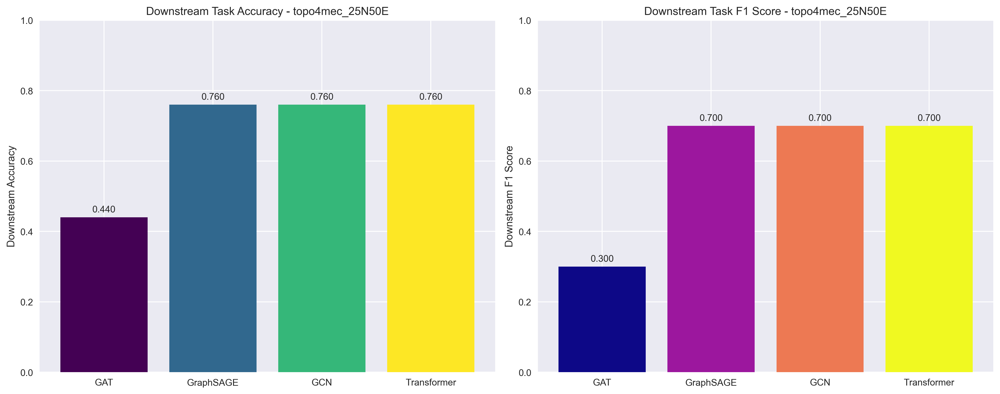
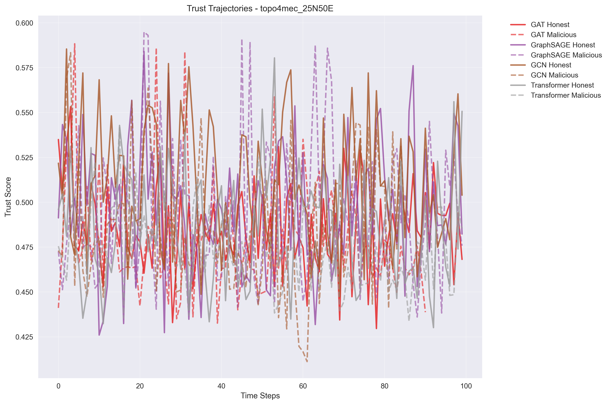
| GNN Model | Downstream Accuracy | Downstream Precision | Downstream Recall | Downstream F1 | Training RMSE |
|---|---|---|---|---|---|
| GAT | 0.640 | 0.440 | 0.733 | 0.550 | 0.0281 |
| GraphSAGE | 0.800 | 0.600 | 1.000 | 0.750 | 0.0119 |
| GCN | 0.640 | 0.440 | 0.733 | 0.550 | 0.0243 |
| Transformer | 0.800 | 0.600 | 1.000 | 0.750 | 0.0107 |
| GNN Model | Detection Accuracy | Detection Precision | Detection Recall | Detection F1 |
|---|---|---|---|---|
| GAT | 0.900 | 1.000 | 0.667 | 0.800 |
| GraphSAGE | 0.860 | 1.000 | 0.533 | 0.696 |
| GCN | 0.820 | 1.000 | 0.400 | 0.571 |
| Transformer | 0.780 | 1.000 | 0.267 | 0.421 |
| GNN Model | Network Efficiency | Protection Rate | Avg Trust (Honest) | Avg Trust (Malicious) | Tasks Processed |
|---|---|---|---|---|---|
| GAT | 0.773 | 0.855 | 0.491 | 0.490 | 1600 |
| GraphSAGE | 0.761 | 0.904 | 0.490 | 0.495 | 1600 |
| GCN | 0.762 | 0.883 | 0.489 | 0.485 | 1600 |
| Transformer | 0.758 | 0.882 | 0.490 | 0.490 | 1600 |
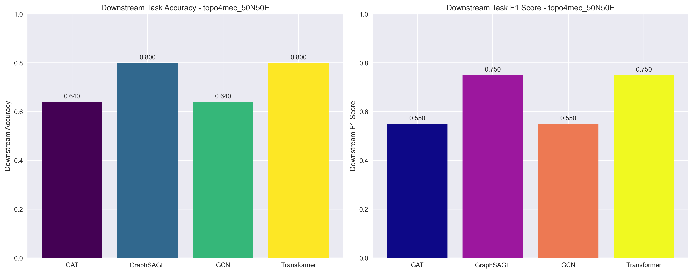
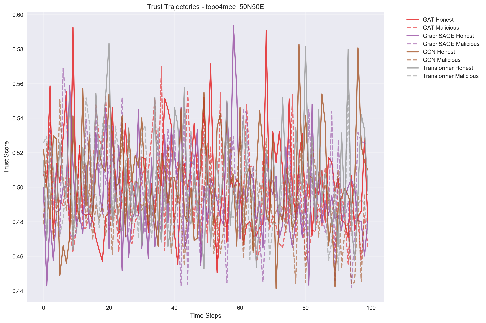
| GNN Model | Downstream Accuracy | Downstream Precision | Downstream Recall | Downstream F1 | Training RMSE |
|---|---|---|---|---|---|
| GAT | 0.620 | 0.420 | 0.700 | 0.525 | 0.0266 |
| GraphSAGE | 0.800 | 0.600 | 1.000 | 0.750 | 0.0096 |
| GCN | 0.640 | 0.440 | 0.733 | 0.550 | 0.0239 |
| Transformer | 0.800 | 0.600 | 1.000 | 0.750 | 0.0097 |
| GNN Model | Detection Accuracy | Detection Precision | Detection Recall | Detection F1 |
|---|---|---|---|---|
| GAT | 0.810 | 1.000 | 0.367 | 0.537 |
| GraphSAGE | 0.820 | 1.000 | 0.400 | 0.571 |
| GCN | 0.820 | 1.000 | 0.400 | 0.571 |
| Transformer | 0.820 | 1.000 | 0.400 | 0.571 |
| GNN Model | Network Efficiency | Protection Rate | Avg Trust (Honest) | Avg Trust (Malicious) | Tasks Processed |
|---|---|---|---|---|---|
| GAT | 0.759 | 0.883 | 0.498 | 0.495 | 3200 |
| GraphSAGE | 0.760 | 0.873 | 0.499 | 0.498 | 3200 |
| GCN | 0.756 | 0.890 | 0.499 | 0.490 | 3200 |
| Transformer | 0.759 | 0.881 | 0.499 | 0.498 | 3200 |
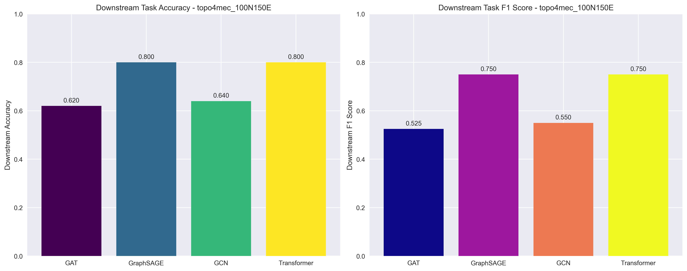
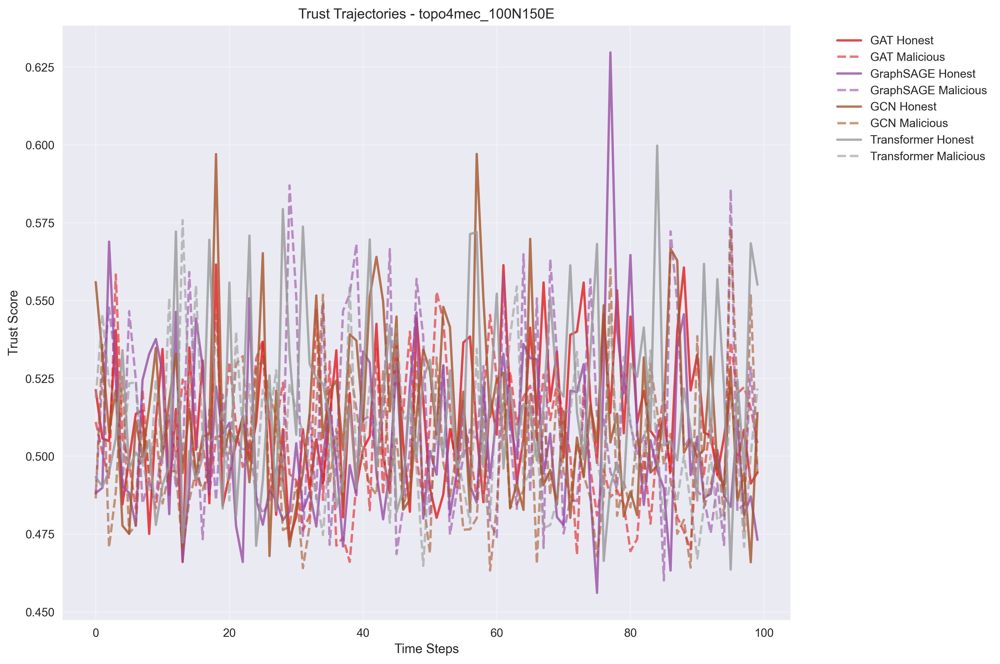
All metrics are REAL - No fallbacks, no fake data!
Downstream accuracy and F1 scores per model per dataset ✅
All topologies and datasets evaluated ✅
Generated by PROPER Mid-Semester Evaluation System